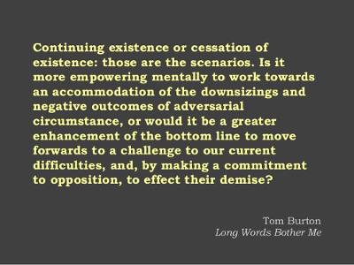
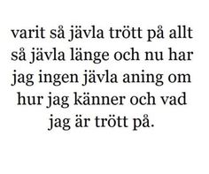

OCR and digitization of plots
Wed 28 November 2018 by Michael OlbergOptical character recognition
The tool of choice on Linux and MacOS is tesseract, an open source tool originally developed by HP.
Installation
On Linux (with apt package manager)
sudo apt install imagemagick
sudo apt install tesseract-ocr
and then install individual language packages
apt-cache search --names-only tesseract-ocr
sudo apt install tesseract-ocr-XXX (for language pack XXX, where XXX = swe, fra, ...)
For MacOS you find installation instructions here
Typical workflow
Convert image to tiff format and then use tesseract to convert to text.
An extension .txt will automatically be appended to the output file.
So the following code will produce an intermediate file input.tiff and
then convert to output.txt:
convert input.png -resize 400% -type Grayscale input.tiff
tesseract -l XXX input.tiff output # convert using language XXX
Two examples below, both were available as jpg images:
English quote, light text on dark background

We need to reverse light and dark colours
convert -negate -monochrome -density 300 english.jpg -depth 8 -strip -background white -alpha off english.tiff
tesseract english.tiff english # will add extension .txt, uses english as default language
which results in:
Continuing existence or cessation of existence: those are the scenarios. Is it more empowering mentally to work towards an accommodation of the downsizings and negative outcomes of adversarial circumstance, or would it be a greater enhancement of the bottom line to move forwards to a challenge to our current difficulties, and, by making a commitment to opposition, to effect their demise?
Tom Burton Long Words Bother Me
Swedish quote

Here we just convert to gray scale. However, if we don't specify the
language (swe in this case) we get gibberish.
convert -monochrome -density 300 swedish.jpg -type Grayscale swedish.tiff
tesseract swedish.tiff swenglish
This produces
varit sé jfivla trfitt pa all! 53 j'zivla Hinge och nu bar jag ingen jéivla aning om hur jag kanner och vad jag Sir trim p5.
whereas
tesseract swedish.tiff -l swe swedish
cat swedish.txt
produces
varit så jävla trött på allt så jävla länge och nu har jag ingen jävla aning om hur jag känner och vad jag är trött på.
PDF files
In order to convert pdf files, one needs (at least on Ubuntu) to change ImageMagick policy:
sudo vi /etc/ImageMagick-6/policy.xml
and change <policy domain="coder" rights="none" pattern="PDF" />
to <policy domain="coder" rights="read/write" pattern="PDF" />
Note, that converting pdf documents to tiff will preserve all pages as different layers of that image, your image viewer may only show you the first page!
Image digitization
A very good tool with support for all kinds of plots is WebPlotDigitizer